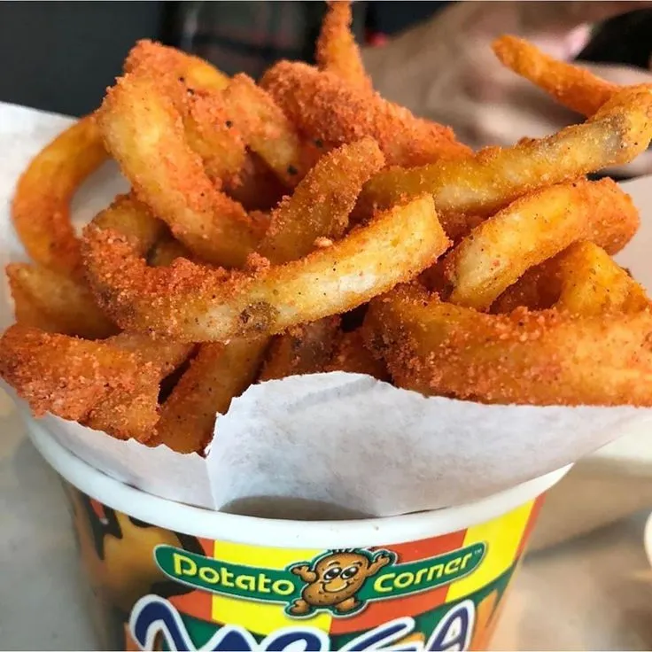

fries

Description
Every bite of sweet corn Potato Corner fries is like eating straight from a cob—except, it’s a cup of your favourite crispy fries.
Ingredients
- potato
- bbq powder
- cheese powder
- ketchup
- salt
- sour and cream
Steps and Prep
- Cut potatoes into uniform strips, typically 1/4 inch thick, and either soak them in cold water or rinse them to remove excess starch, which helps prevent browning and improves crispiness.
- Parboil or simmer the cut fries in water for 10 minutes to partially cook them, then drain and dry thoroughly to remove surface moisture, which is crucial for achieving crispiness during frying
- Heat oil to a moderate temperature (around 325°F or 165°C) and fry the potatoes for 5–10 minutes until they are soft and pale, then remove and let them rest for a few minutes..
- Increase the oil temperature to 375°F (190°C) and fry the potatoes again in smaller batches until golden brown and crispy, usually for 2–5 minutes
- Drain the fries on paper towels and season immediately while hot to ensure the salt adheres.